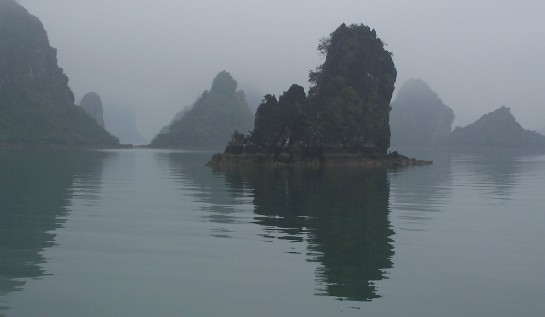
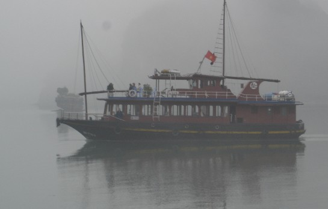
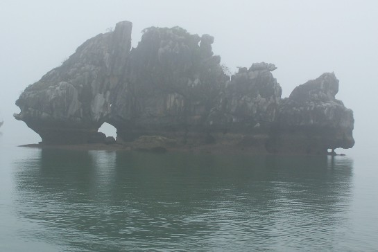
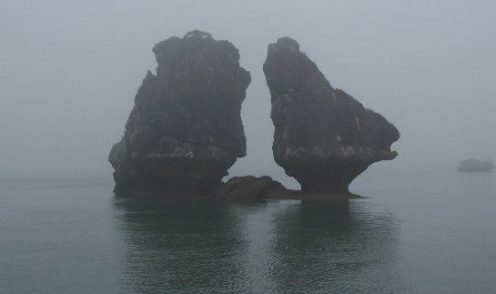
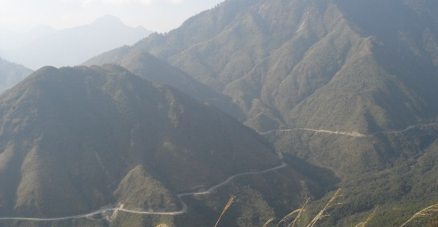
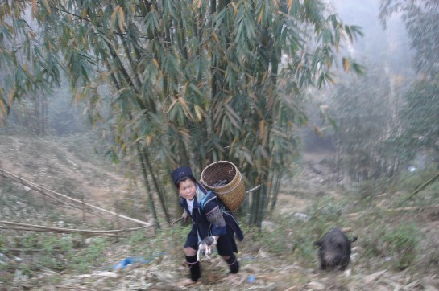
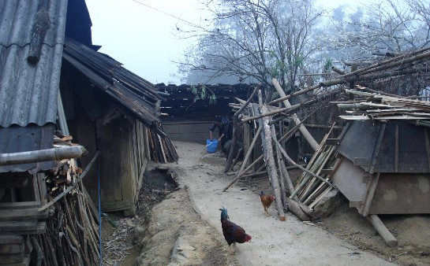
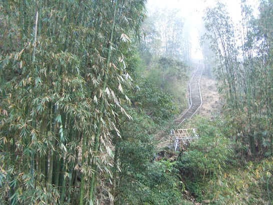

Ha Long Bay is located in the North East of Vietnam. With thousands of limestone towers rising from its turquoise waters, Ha Long Bay is rightly considered as one of Vietnam’s most beautiful spots and a UNESCO World Heritage Site.
The bay's scenery is best seen by boat, although it was misty and foggy when we went.
A Fish Rock formation.
This was supposed to be the Kissing Chicken Rocks but you have to see it at the correct angle.
Sapa is a remote mountain town in North Vietnam, close to the Chinese border. This quiet town is known for incredible scenery, and home to ethnic minorities and hill tribes.
We flew from Saigon into Hanoi (capital of Vietnam), took an overnighter on an old train, followed by a long bus ride along curvy, winding, steep and bumpy mountain roads to get there.
We saw a tribeswoman working and tending to her pot-bellied pig.
She invited us to her humble home. We made friends and felt the local life and culture.
Lush green bamboo forest. Did you know that bamboo is the fastest growing plant in the world and can grow up to 3 feet in a day?
